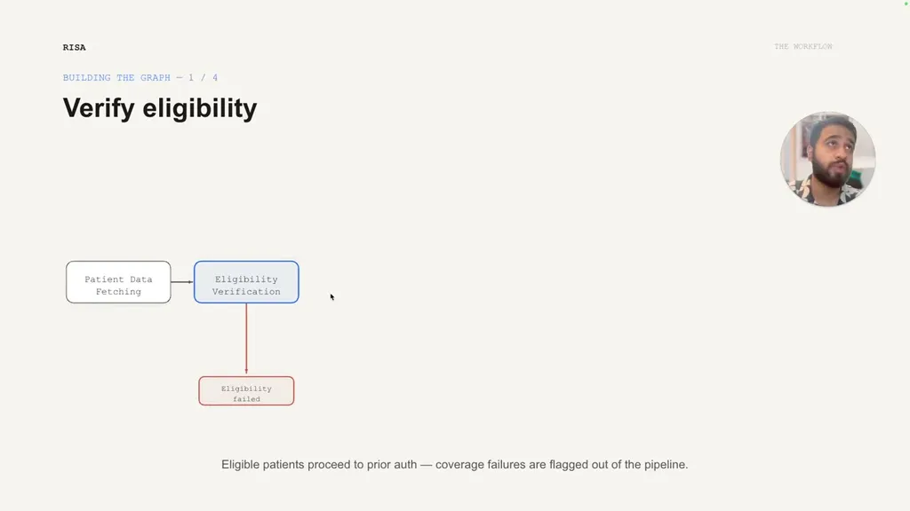
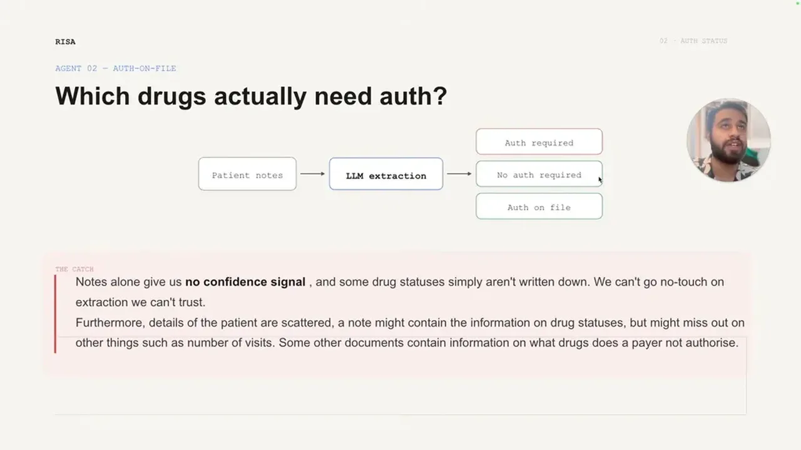
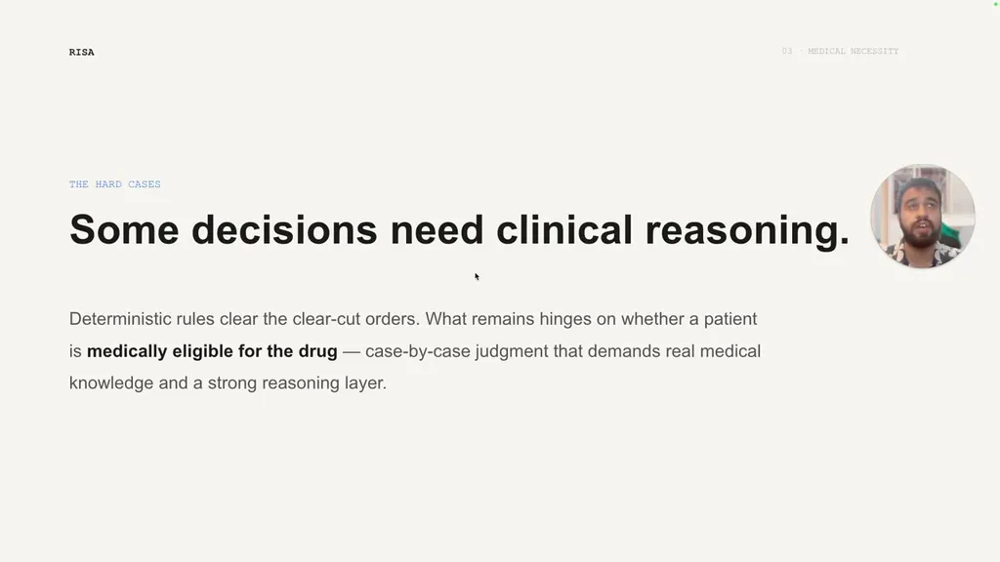
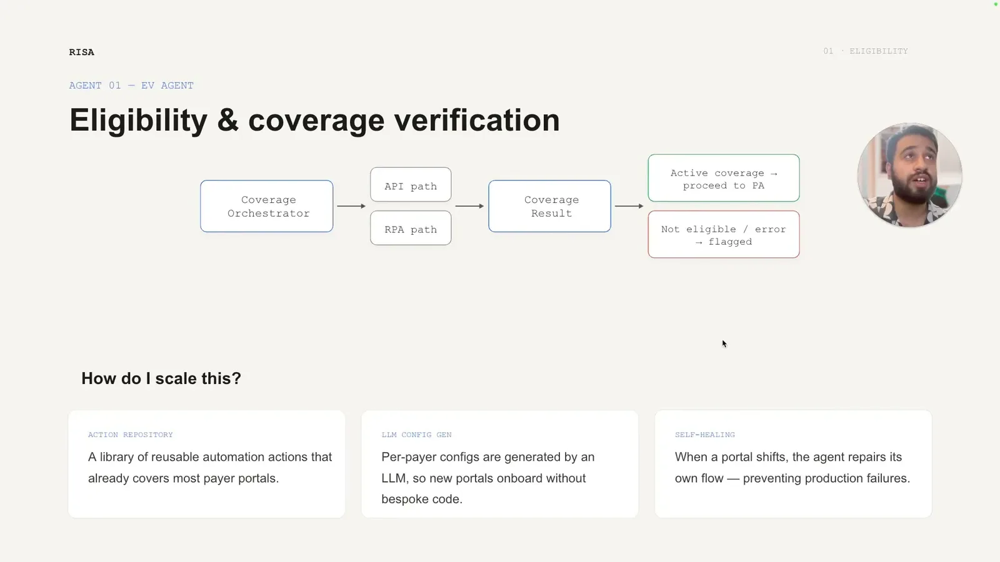

Can Oncology Workflows Run Without Human Touch?
If you only read one thing
- A single LLM extraction pipeline over patient notes was not enough to remove humans from review because LLM extraction is indeterministic and cannot be blindly trusted.
- Cross-referencing two independent sources (authorization letters plus a payer-rule knowledge base) let the team only auto-approve cases where both sources agreed, enabling true no-touch processing for a subset of orders.
- A four-agent pipeline (eligibility, auth status, medical necessity, submission) plus deterministic checks and a self-healing RPA loop is progressively growing the no-touch share of orders while escalating clinical judgment calls to a human.
The prior-authorization workflow intakes orders, verifies insurance eligibility, and classifies each drug as no-auth-required, auth-on-file, or auth-required, previously requiring human review before every submission. The goal was to confidently identify a subset of orders that could go through without any human verification.
“I need to confidently identify which all orders can be proceeded without any human verification and then build the entire flow for them as well”
▶ watch at 01:34
An initial LLM extraction pipeline over patient notes classified drugs into the three auth categories, but the team found notes often lacked sufficient data and that LLM extraction is an indeterministic process, so its output could not be blindly trusted for no-touch approval, only used to improve human review efficiency.
“LLM uh extraction is sort of an indis- uh indeter- deterministic process. That means that whatever outputs we get from here cannot be blindly tested”
▶ watch at 06:40
The team added two independent data sources: historical authorization letters, and a payer-rule knowledge base built from a SQL database of portal checks and LLM extractions covering which drugs a given payer does not require authorization for on a monthly basis. Where the LLM extraction and an independent source agreed, the team could confidently mark an order no-touch; this eliminated entire orders where all drugs fell into these two categories.
“instead of just having one source, I have two sources that give me the same information and wherever they conquer, I can say with confidence that this drug is already been authorized”
▶ watch at 07:54“we noticed that certain orders were completely eliminate We could eliminate certain orders completely from these two type of drugs”
▶ watch at 09:59
For drugs that do require authorization, a medical necessity agent reads the patient notes, the policy criteria, and queries a patient medical graph of extracted biomarkers, then answers the necessity question with supportive and contradictory facts attached, along with a confidence score, escalating only low-confidence cases to a human clinician.
“The medical necessity agent answers simple and complex clinical questions per patient uh and attaches confidence score to any answer. So, we escalate only the ones that actually need a clinician”
▶ watch at 12:06
The full pipeline runs four agents (EV, auth, necessity, submission) atop a deterministic decision engine and a self-healing RPA loop that mitigates automation breakages during production hours. The speaker summarizes the approach as starting with deterministic checks, applying agents only where rules cannot decide, and using multiple sources of evidence rather than a single source to build confidence for no-touch processing.
“these automations are fragile, so it may happen that they break during the run time. For this, we have a self-healing loop which identifies these cases during production hours and then mitigates them”
▶ watch at 04:56“we started with deterministic checks. Agents only for the rules that where what rules can't decide. We used multi-source of evidence to beat the single source of evidence to add confidence”
▶ watch at 16:14
Commentary (ours)
The core mechanism here (never trust single-source LLM extraction for an auto-approval decision; require independent corroboration) generalizes well beyond healthcare to any compliance-adjacent automation, though it depends on a second, genuinely independent evidence source existing at all, which won't be true in every domain (ours).
Underlying detail — every claim, typed and timestamped (7)
| Stance | Claim | t |
|---|---|---|
| asserts | The task was to confidently identify which prior-authorization orders could proceed to submission with zero human review. | 01:34 |
| warns | LLM extraction alone is indeterministic and cannot be blindly trusted to eliminate human review, only to improve efficiency. | 06:40 |
| recommends | Recommends confirming an LLM-extracted auth status against a second independent source (authorization letters or payer rule knowledge base) before treating it as confident. | 07:54 |
| asserts | Orders where all drugs fell into the no-auth-required or auth-on-file categories could be eliminated from human review entirely. | 09:59 |
| asserts | The medical necessity agent answers clinical questions per patient with a confidence score, escalating only low-confidence cases to a clinician. | 12:06 |
| asserts | A self-healing loop identifies and mitigates automation failures during production hours to prevent breakages. | 04:56 |
| recommends | Recommends starting with deterministic checks, applying agents only where rules can't decide, and using multi-source evidence over single-source evidence. | 16:14 |
Machine-readable copy embedded in this page (script#ontology) and in the corpus ontology.